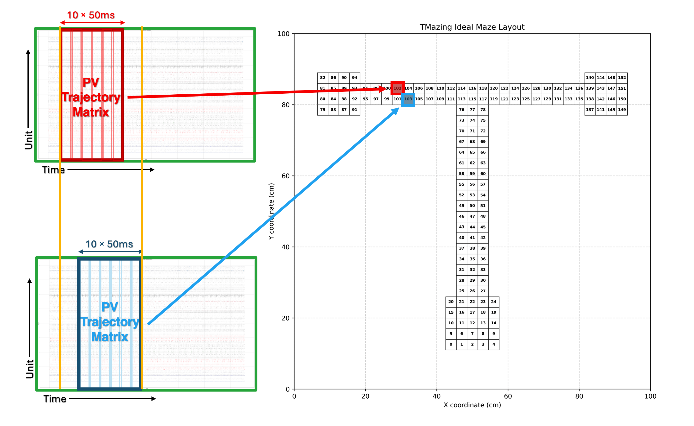
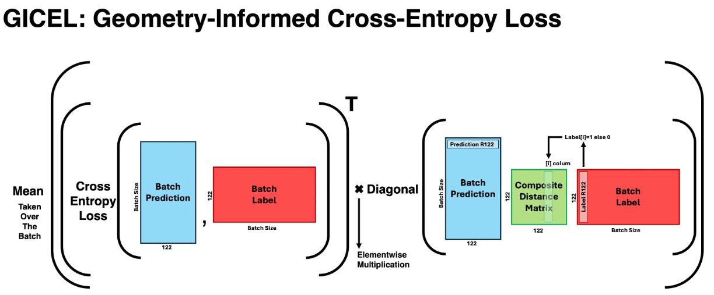
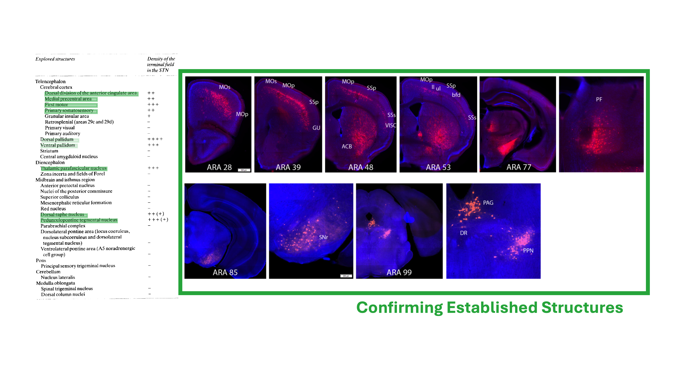
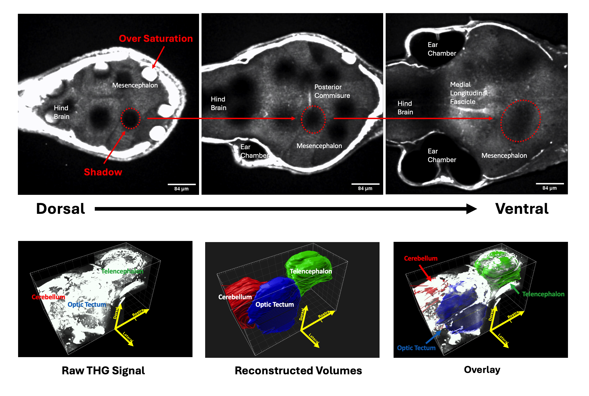
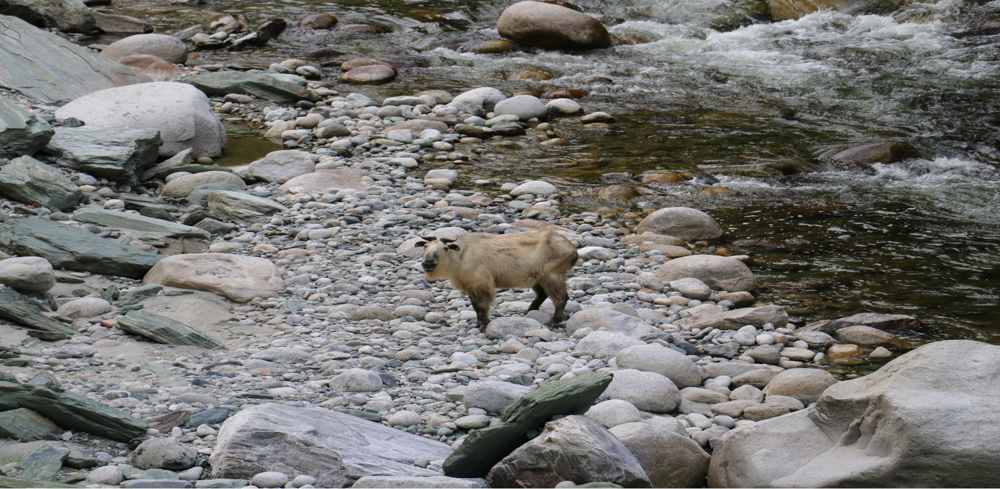

Harvard Medical School, Research Assistantship
July 2024 - The Present
Themes: System Neuroscience, Rodent Spatial Navigation, Hippocampus, Neural Population Dynamics, Working Memory Maintenance
The brain’s fundamental role in adaptive behavior lies in its capacity to coordinate effector organs in response to environmental demands. The timing of muscle activations, for example, can drastically affect behavioral outcomes in classic fight or flight contexts. However, as the environment becomes more complex, the decision for immediate action often relies on past sensory states no longer present to the animal. Foraging rodents need to remember which patches were already searched to conserve energy, and humans need to remember where they last placed their car keys. Both humans and animals demonstrate the ability to use past experiences to plan and simulate future actions, which are essential characteristics for higher-order brain function and flexible decision-making. My work at Lee Lab models these tasks to study memory recall and imagination in the rodent model system. We train mice and rats to perform spatial navigation tasks that require them to either actively recall past experiences or imagine potential future trajectories. During behavior, we record from them using multisite silicon probes and population calcium imaging methods. With our group’s strong background in engineering and mathematics, we apply a range of analytical approaches from simple firing-rate analysis to RNN-based experiment variable decoders. My current project employs a T-maze-based DNMTS (delayed nonmatch-to-sample) task to study how working memory is maintained through long delay periods in rodents. The task requires the subject to remember a sample stimulus over a long delay and then choose a novel nonmatching option when presented with the sample and the new alternative. In the T-maze implementation, both the sample stimulus and the new alternative are navigation targets equipped with reward ports. We record large-scale electrophysiological activity in freely moving animals and examine consistent patterns that emerge during delay as signatures of the maintained sample stimulus. To analyze high-dimensional neural population data, I developed a novel LSTM (long short-term memory) decoder incorporating a custom loss function termed GICEL (Geometry-Informed Cross-Entropy Loss). This architecture processes population vector trajectories to classify animal location, task phase, and movement direction with a few technical innovations. Feature-gating mechanisms in early layers help to selectively emphasize informative neural signals (e.g., place cell activity) while suppressing noise from less relevant cell types. Additionally, the vanishing gradient tendency of LSTM, which is traditionally a limitation of RNN architectures, is leveraged to naturally prioritize more recent PVs in the sequence over earlier ones. The custom loss function, GICEL, further enhances performance by making the model aware of the consequences of different classification errors that reflect the maze’s spatial geometry. Unlike conventional cross-entropy loss that optimizes based solely on the target class probability, GICEL incorporates information from the entire prediction distribution. These technical designs achieved a 2.4-fold improvement in evaluation metrics and accelerated training convergence compared to standard methods. I am currently applying the model to both delay phase data and task phase data to detect nonlocal representations: population activity patterns that do not reflect the animal’s immediate sensory state. During the delay period, we search for representations of either recently visited locations (retrospective coding) or future goal locations (prospective planning). During task execution, we track the emergence of target location representations to identify the moment of decision commitment. This work is ongoing and continues to provide insights into the neural dynamics of working memory and decision-making. Complementing this empirical work, I am developing reinforcement learning simulations of the behavioral task to generate testable predictions about the computational demands of working memory maintenance (see the Simulation page for more information).
Feature-gated RNN trajectory decoder maps from a trajectory of PVs to experiment variables including animal spatial location, travel direction, and experiment phase.
Transforming spatial decoding into a classification task present challenges to the model to understand the relationship between input and output.
The custom loss function, GICEL, improves generalization by making the model aware of the consequences of different classification errors that reflect the maze’s spatial geometry.
UCLA, Neuroscholar Summer Research Program
June 2023 - Sept 2023
Mouse Connectomics, Viral Tracing Methodology, Fluorescence Microscopy, Basal Ganglia Circuit, Subthalamic Nucleus
Knowing the structure of the brain is essential for understanding how neural circuits give rise to complex behavior. In recent years, we have seen many examples where connectomics datasets reveal previously uncharacterized pathways and motifs that help to explain population-level neural dynamics and circuit function. In 2023 summer, I was awarded the UCLA Neuroscholar Scholarship for an undergraduate research opportunity at the Dong Lab (Dr. Hongwei Dong). Dong Lab, or UCLA B.R.A.I.N. (UCLA Brain Research & Artificial Intelligence Nexus), is dedicated to constructing a comprehensive, mesoscopic mouse connectome employing multidisciplinary approaches including genetics, 3D imaging, artificial intelligence, and advanced histology. Under the mentorship of Dr. Nicholas Foster, my project used viral tracing methodologies to investigate the connectivity of the STN (subthalamic nucleus). The basal ganglia circuit is highly recurrent with very specialized input-output relationships. STN occupies a strategic position within the basal ganglia circuit as the primary modulator of basal ganglia output and a critical target for basal ganglia DBS (deep brain stimulation) therapeutics. In our literature review, we found that previous studies of STN afferent projections using chemical tracers were prone to inconsistent results, where retrogradely labeled regions failed to demonstrate reciprocal connectivity when examined with anterograde chemical tracers. To address this non-specificity, we used a viral tracing construct known as TRIO (Tracing the Relationship between Input and Output), targeting STN and its main postsynaptic target SNr (substantia nigra pars reticulata). This system integrates a clever combination of a modified viral vector with the Cre expression system to restrict the expression of the fluorescence reporter to a specific path of projection. The approach enables precise trans-synaptic input mapping from defined neuronal populations based on both projection targets and cell-type identity, attenuating false-positive signals from injection site artifacts. In the end, our results helped address the inconsistencies in the existing literature and additionally identified novel anatomical connections to the STN that had not been previously characterized. We also found initial evidence of internal topographical organization in several key structures, including GPe (globus pallidus external segment) and caudoputamen. Specifically, anatomically adjacent regions within these structures exhibited distinct connectivity patterns, suggesting functional subdivision at a finer spatial scale than previously appreciated. These results contribute to our current models of basal ganglia organization and have implications for understanding both normal circuit function and the mechanisms underlying movement disorders. These findings were presented in an abstract at a department event at the conclusion of the research program.
Overview of our viral tracing strategy. The pseduotyped rabies virus selectively infects STN neurons expressing TVA receptor. The TVA gene is in turn delivered retrogradely from SNr.

A standard viral tracing experiment pipeline begins with tracer injection and concludes with imaging and quantitative analysis.

The TRIO viral tracing strategy allows us to selectively target the STN neuron population that sends projections to SNr.
Results corroborate established literature regarding primary afferent sources to the STN while providing enhanced methodological rigor than chemical tracers.
Cornell University, Undergraduate Research
Sept 2020 - May 2024
Themes: System Neuroscience, Behavioral Scoring, Three-Photon Microscopy, Sensory Mapping with Endogenous Activity Marker
During undergraduate research at Bass Lab (Professor Andrew Bass), I contributed to establishing Danionella dracula as a pioneering model organism for system neuroscience. This miniature teleost fish species is a close relative of zebrafish that not only remains transparent throughout its lifetime but also lacks a skull roof, making it an attractive model for optical neuroimaging studies of intact brain circuits. My undergraduate research experience encompassed three complementary projects investigating their social behavior, developmental neuroanatomy, and sensory system organization. The first project I contributed to was a neurobehavioral study to characterize the species’ social interactions, through which we hoped to establish behavioral paradigms for intraspecific aggression. During aggressive displays, males exhibit a stereotyped behavioral pattern including hypertrophied jaw extension and coordinated acoustic signaling. We analyzed the interactions between Danionella adult males to score how often an individual directed or received aggression from another male. We were able to demonstrate that Danionella exhibits a sophisticated hierarchical social relationship in which aggressive “higher-ranking” individuals receive less aggression and gain more frequent access to spawning sites than “lower-ranking,” less aggressive conspecifics. In the summer of 2022, I investigated developmental trajectories of different brain regions in Danionella dracula using advanced optical methods. Working with Dr. Rose Tatarsky, we employed three-photon microscopy to perform comprehensive volumetric imaging of the entire central nervous system in intact, living Danionella specimens. This approach required no physical intervention other than simple mechanical stabilization, which allows for longitudinal studies of nervous system development. We identified the boundary between different brain regions in 3P imaging data using established neuroanatomical landmarks. This then enabled us to track regional growth trajectories with contour tracing and volumetric estimation methodologies. A particularly interesting result we were able to demonstrate was that the emergence of behavioral patterns like the aggressive displays correlates with the rapid growth of certain brain regions, providing quantitative evidence for structure-function relationships during neural development. My final project investigated sensory responses in the Danionella dracula telencephalon to construct a sensory map for the Danionella brain, relying on the fact that sensory representation is often topographically organized in teleost sensory systems. I was initially contributing to viral vector injection protocols that aimed at establishing transgenic lines expressing pan-neuronal GCaMP. However, achieving uniform expression across diverse brain regions presented significant technical challenges that could confound activity measurements. To circumvent this limitation, we adopted an alternative endogenous activity marker known as pERK (phosphorylated extracellular signal-regulated kinase). Previous studies in larval zebrafish demonstrated robust correlations between pERK expression levels and GCaMP-derived activity measurements, validating this approach for our application. Through systematic pERK immunohistochemistry following controlled sensory stimulation (visual, acoustic, and lateral line modalities), we identified discrete telencephalic regions responsive to each sensory domain, contributing to the first comprehensive sensory map for this emerging model system.

Danionella dracula is a unique model organism that open new opportunities for optical neuroimaging. Their tooth-like hypertrophic jaw is a key feature of their aggressive display. (Image credit: Tatarsky 2022)

The unique physiology of Danionella dracula enables the first complete brain imaging of a living adult vertebrate. Our non-invasive, manipulation-free method allows for longitudinal investigations of nervous system development.
3P volumetric imaging of the Danionella dracula brain allows us to track regional growth trajectories with contour tracing and volumetric estimation methodologies.

Our setup for controlled sensory exposure in the pERK activity mapping experiment. Our setup allows for precise control of sensory stimulation of different modalities.
Early Research Experience (Before College), Student Volunteer
2017 - 2020 (High School)
Themes: Neural Regeneration, Molecular Genetics, Animal Courtship Behavior, Ecological Wildlife Conservation
My early interest in biological science was more general, and I was involved in research projects on very diverse topics, including molecular genetics of neuronal regeneration, animal courtship behavior, and ecological wildlife conservation. At Sichuan University, I investigated how metformin, a widely prescribed antidiabetic medication with a nuanced profile of therapeutic benefits, affects the nervous system repair of a highly regenerative flatworm species called planaria. With a team of three high school researchers, we conducted controlled experiments exposing planarian populations to graded metformin concentrations and quantified neural repair responses using immunohistochemical visualization. To further explore metformin’s operating mechanism, we consulted literature and identified the GSK3β/Wnt signaling pathway as a potential mediator of metformin's regenerative effects. To test this hypothesis, we implemented pharmacological pathway inhibition experiments and demonstrated metformin's neural repair enhancement is abolished when GSK3β/Wnt signaling is blocked. This evidence suggests that GSK3β/Wnt plays a major role in metformin-mediated neural regeneration. In the Emei Mountains, the habitat of the Rana Daunchina frog, I assisted two graduate students in investigating the species’ courtship behavior. The research project employed controlled playback experiments to determine female preferences for specific male call characteristics and examine the evolutionary pressures shaping acoustic communication. To ensure the experiments coincided with the species’ natural mating period, I adopted a nocturnal cycle. I captured the frogs for use in the experiments each morning before I went to sleep, and I woke up in the late afternoon to prepare for the experiments at midnight. Our results showed that not only are the females highly selective in their mating call preference, the structure of male-built nests changes the male’s mating call acoustically to match the female’s preferred frequency profile. In Tangjiahe National Reserve, I joined a government-funded research expedition as a volunteer with the National Department of Biology. The purpose of the trip was to analyze how local animal populations had changed their navigation patterns and spatial distribution in response to local tourist activities. We used mapping software to survey how the population distribution of indicator species like reptiles and snakes had changed due to human constructions. In parallel, we installed infrared cameras to trace keystone species like the local takin population, a gentle animal that looks like a sheep with a buffalo head. Our comprehensive analysis provided park officials with quantitative data on habitat fragmentation effects and population displacement patterns. These results were used to inform park management decisions regarding protective barrier placement and tourism-impact mitigation strategies.

Metformin is an antidiabetic medication with a nuanced profile of therapeutic benefits. We investigated its effects on the nervous system repair in a highly regenerative flatworm species called planaria.

Rana Daunchina frog is called magical chordophone frog in native language because their mating call sounds like Guzheng, a traditional Chinese stringed musical instrument.
Takin is a gentle animal that looks like a sheep with a buffalo head. It is a keystone species in the Tangjiahe National Reserve.